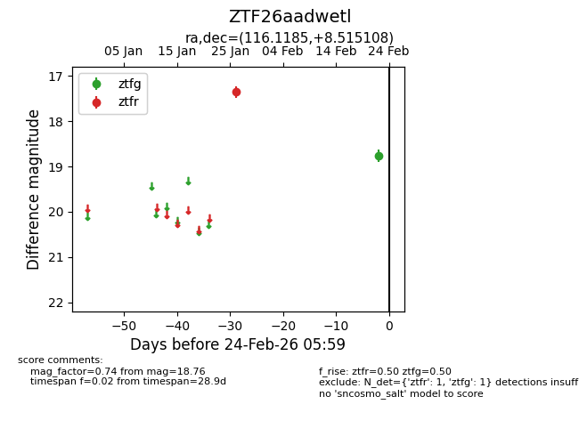
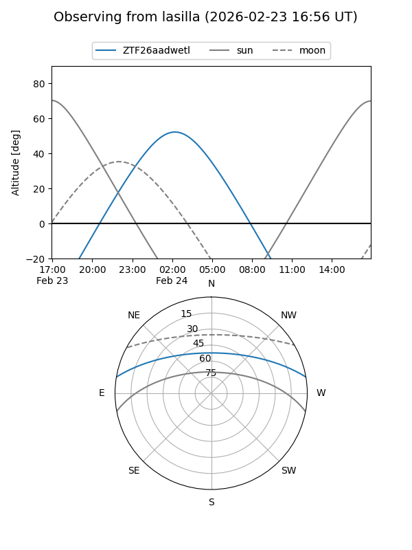
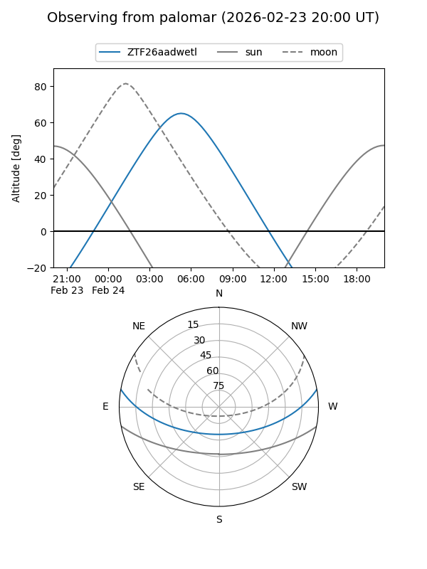

ZTF26aadwetl
Target ZTF26aadwetl at 2026-02-24 09:08
Aliases and brokers:
FINK: link
Lasair: link
ALeRCE: link
alt names
ZTF26aadwetl (ztf,fink_ztf)
Coordinates:
equatorial (ra, dec) = 116.1185,+8.51511
equatorial (HMS+DMS) = 07:44:28.45,+08:30:54.39
galactic (l, b) = (211.2449,+15.62797)
Flags:
Photometry:
last ztfg=18.76, ztfr=17.36
1 ztfg, 1 ztfr detections
Lightcurve

Visibility


Additional plots